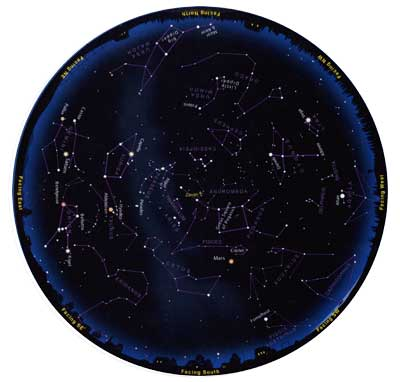

Late: November: 9 p.m.
Early December: 8 p.m.
Late: December: 7 p.m.
Early January: Dusk
The bright constellation Orion is rising up in the east these cold, dark evenings. Off to its left shines yellow Saturn. Orange Mars glows higher in the southwestern sky. These are just a few of the celestial sights you can find on any clear evening from mid-November through early January using this sky map. Here's how:
Check the times and dates at the top of the page. Take this map out under the night sky within an hour or so of the right time. Bring a flashlight to read the map. Secure a piece of red paper over the lens of the flashlight with a rubber band; the dim red light won't spoil your night vision.
Outside, you need to know which direction you're facing. (If you're unsure, just note where the Sun sets; that's roughly west.) Hold the map in front of you, and look at the yellow labels around the edge.
Turn the map around so the yellow label for the direction you're facing is right-side up. The curved edge is the horizon; the stars above it on the map now match the stars in front of you. The farther up from the map's edge they appear, the higher they'll be in the sky.
The center of the map is the zenith (straight overhead), so a star halfway from the edge of the map to the center will appear halfway from straight ahead to directly above you. Ignore the parts of the map above horizons you're not facing.
Let's give it a try! Turn the map around and hold it so its northwest horizon (labeled "Facing NW") is right-side up. Not far up from there, and a bit to the left, is bright white Vega. The brightest star above Vega is Deneb, less brilliant. Go out at the right time, face northwest - and there's Vega sparkling away, with Deneb higher above it.
A couple of tips: Look for the brightest stars and constellations first; light pollution or moonlight may wash out the fainter ones. And remember that star patterns in the sky will look a lot bigger than they do here on paper.
Another tip: Planets move with respect to the stars. Mars is drawn at its position for mid-December. In the preceding weeks it will appear a little to the right of its plotted position; in the weeks after it will appear to the left. Saturn moves, too, but only slightly.
You can customize a night sky map for your location at SkyandTelescope.com.
©Sky & Telescope Magazine
Mother Earth News
|
 |
|
|